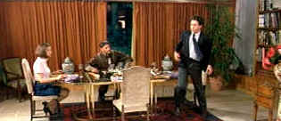
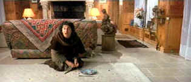
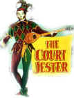

| Les Visiteurs/B+,B+ |
| Miramax/1993/107/ANA 2.35 |
High concept meets low comedy in the French farce, Les Visiteurs. Prepare yourself for some base humor punctuated by various noxious bodily sounds as a knight and his vassal are transported 1000 years ahead in time to a France with some very unfamiliar obstacles to overcome.
Speaking of French comedies, how many of you have seen Les Visiteurs,
the hugely successful French time-travel farce. Actually, it's more of a
fish out of water flick. The toilet humor may not be delicious, but it
brought the flush of laughter out with resounding effect. My, God, the
dinner scene was a gut-buster.
the film comes to life after the time jump naturally enough. Production design is very entertaining. Les Visiteurs is great to look at from beginning to end.
Jean Reno is Sir Godefroy, the Count de Mont and Christian Clavier (co-writer of the screenplay) is Jacquasse
  |
| A medieval dinner. ©Miramax |
The widescreen anamorphic image is very clean. Some edge enhancement is evident. Overall detail is very good. Color is vibrant, flesh tones well varied. Yellow English Subtitles appear to have been designed for a deaf or hard of hearing audience since they include descriptions of sounds. At times, it's pretty funny, but it wears thin after a while and is merely an intrusion to the merriment.


The wonderful comedy of Danny Kaye comes from a sweet source, making
it live for audiences of all ages. Patter songs and graceful dances are
part of Kaye's world. Click on the image for Any Day Danny Kaye.

Quite simply one of the funniest comedies ever made and the transfer
is gorgeous.